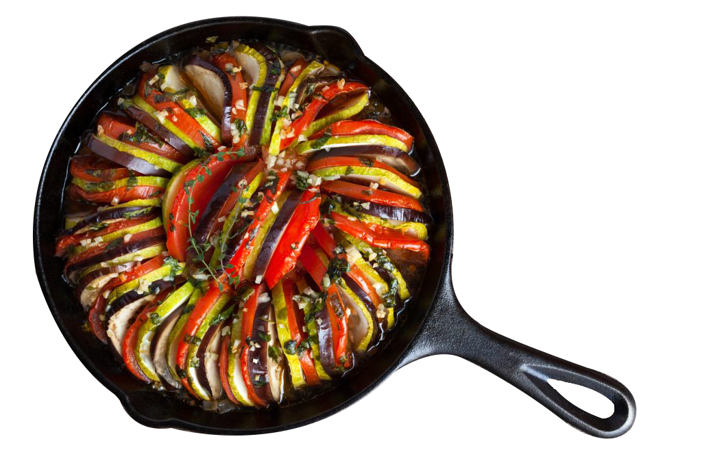

Acesse nossas receitas!
Isso é La Peti
Se você gosta do mundo das receitas, no LaPeti
poderá
descobrir uma infinidade de receitas deliciosas
que irão
satisfazer até os paladares mais exigentes.
No nosso site poderá encontrar todo o tipo de receitas
de cozinha capazes de surpreender os paladares mais requintados.
